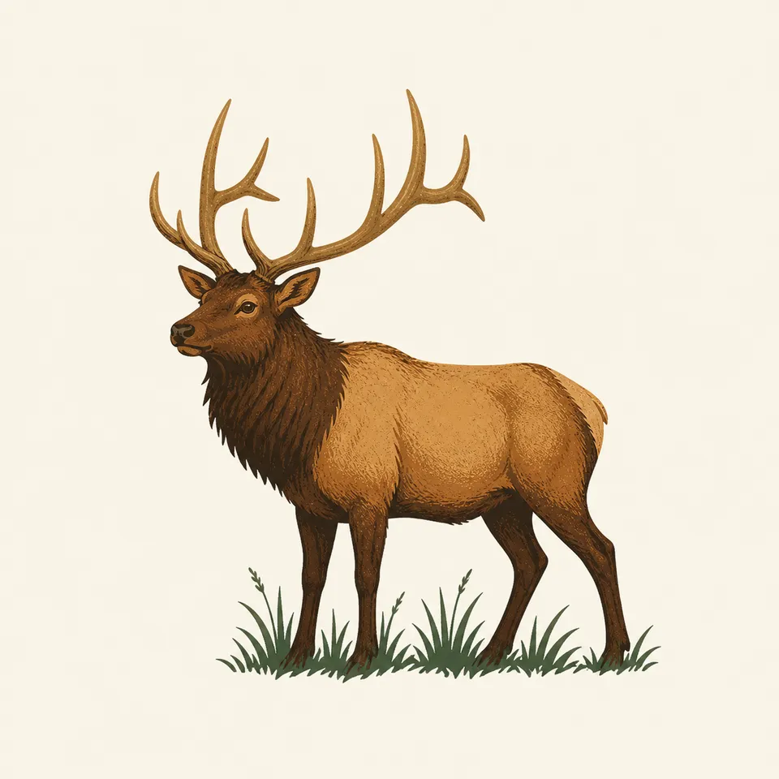
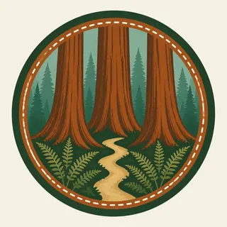

01
Old-growth groves
In protected valleys and alluvial flats, coast redwoods frequently exceed 300 feet, the specific growing conditions this park exists to protect.
TrailMark Archive Edition
California | North Coast
Established October 2, 1968, the same day as North Cascades, and jointly managed with three California state parks since 1994.
Archive No. TM-REDW-056
National Park since 1968
Collection Coast Redwood Forest
Park Overview
Congress established Redwood National Park on October 2, 1968, the same act that created North Cascades on the opposite coast. In 1994, a landmark agreement between California and the National Park Service brought Redwood National Park together with three older state parks, Jedediah Smith, Del Norte Coast, and Prairie Creek Redwoods, first established by California in the 1920s, under joint management.
Together, Redwood National and State Parks protect 138,999 acres of prairie, oak woodland, wild rivers, ancient redwood groves, and 35 miles of Pacific coastline. UNESCO named the property a World Heritage Site in 1980.
In protected valleys and alluvial flats, coast redwoods frequently exceed 300 feet; on drier, wind-exposed ridges like Lady Bird Johnson Grove, they typically average 200 feet or less, the difference driven by water access and salt wind exposure.
Emotional Thesis
The header painting sets sunlight filtering through immense trunks onto a fern-lined trail, a fairly literal rendering of an old-growth redwood grove. The scale is not exaggerated: trees here regularly exceed 300 feet in favorable ground.
The world's tallest known living tree, Hyperion, was found within the park in 2006. NPS has since closed the surrounding area entirely, stating plainly that visitor foot traffic had already damaged the tree's base and killed the ferns that once grew around it: forests grow by the inch and die by the foot.
Landscape Highlights
01
In protected valleys and alluvial flats, coast redwoods frequently exceed 300 feet, the specific growing conditions this park exists to protect.
02
On drier, wind-exposed ridges such as Lady Bird Johnson Grove, redwoods average 200 feet or less, weathered shorter by salt-laden wind and water stress.
03
Coastal prairie, dune, and scrub communities buffer the redwood forest from the salt spray and wind that would otherwise injure the trees closest to shore.
Wildlife
Roosevelt elk, the largest of North America's elk subspecies, graze the park's coastal prairies and meadows, often visible from roadside pullouts near Prairie Creek. The extra drawing, a standing Roosevelt elk, is the archive's image of that grassland-and-forest edge.

01
Elk herds move between prairie grazing and forest cover, a pattern tied to this park's mix of open prairie and dense old growth.
02
The redwood canopy itself, hundreds of feet up, hosts a distinct ecosystem of ferns, other plants, and animals rarely seen from the ground.
03
Salmon-bearing streams run through the park's river systems, part of the broader coastal ecosystem the redwoods anchor.
Geology
Coast redwoods reach their extreme heights only under a specific combination of conditions: consistent water from streams and alluvial flats, and shelter from salt-laden coastal wind.
01
Protected valleys and alluvial flats along streams provide the ideal growing conditions the park's tallest trees depend on.
02
Ridge-top groves like Lady Bird Johnson Grove average shorter, closer to 200 feet, because they lack that same water access and face direct wind.
03
Coastal buffer communities, beach, dune, and scrub, absorb salt spray that would otherwise injure redwoods growing closer to the shoreline.
Coastal fog is common and often persistent, part of the moisture cycle that helps sustain the tallest groves even in the dry season.
Rain begins returning to the coast; rivers and streams start rising toward the wetter season ahead.
The wettest season, with heavy rainfall feeding the streams and alluvial flats the tallest trees depend on.
Rivers run high with rain and snowmelt; understory ferns and prairie wildflowers green up across the park.
Photography
A tree this tall cannot be shown whole and legible in one ordinary frame; showing what makes it tall is often more effective than trying to show all of it.
01
A hiker at the base of a grove trunk is often the only way to convey what "300 feet" actually means in a photograph.
02
Morning fog filtering light between trunks, as in the header painting, captures the forest's atmosphere better than a clear-sky shot often can.
03
The tree and its surrounding area are closed to protect it; there is no responsible way to photograph it up close, and doing so risks a fine or jail.
Field Notes
Forests grow by the inch and die by the foot, which is the exact reason the tallest tree here is now off-limits.
TrailMark Field Notes

Badge Story
The badge fails if it tries to show an entire redwood; the scale defeats a small mark. A close, wide trunk with visible bark texture is the honest picture.
Warm red-brown bark against cool misty green canopy light.
Ferns at the base, a real and characteristic understory plant here.
No full-tree silhouette; the trunk's width is the point, not its height.
Archive No.056
LocationNorth Coast
ReleaseTall Tree Mark
Stewardship / Safety
Redwoods have shallow, wide-spreading root systems easily damaged by foot traffic; some areas, including Hyperion's, are closed entirely to protect specific trees.
Stay on established trails; off-trail walking compacts soil and damages the shallow roots redwoods depend on.
Respect the Hyperion closure; entering it risks both damage to an irreplaceable tree and a legal penalty.
River and creek crossings can flood quickly in winter rain; check current conditions before fording any stream.
Roosevelt elk, especially during rut, should be given wide berth; they are large, wild animals, not park mascots.
Current conditions, fees, and alerts are on the National Park Service site.
Continue the Archive
Sequoia protects the giant sequoia, the most massive tree by volume; Redwood protects the coast redwood, the tallest by height. Olympic, already open, is the Pacific Northwest's own temperate rainforest, a different kind of giant-tree country.